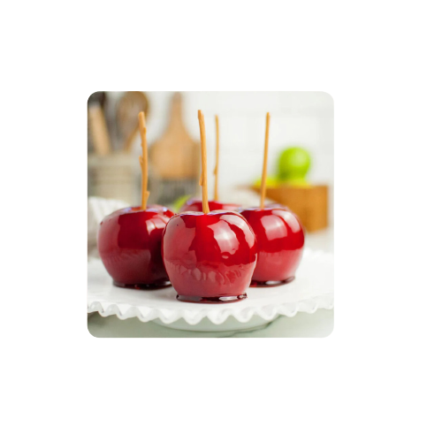
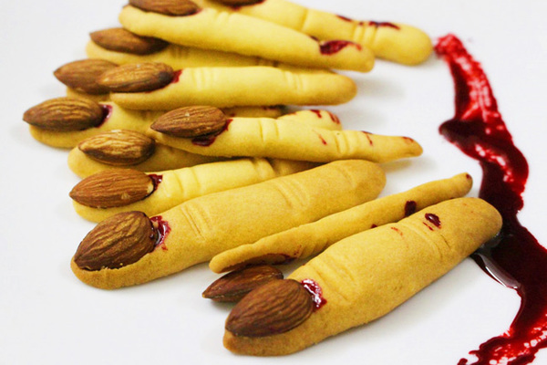

Kẹo táo
Những chiếc kẹo táo luôn được trẻ em yêu thích bởi màu sắc hấp dẫn. Để làm ra que kẹo táo tuyệt đẹp, những quả táo được nhúng qua đường đỏ hoặc siro để tạo ra màu sắc bắt mắt. Ngoài ra, kẹo táo còn được trang trí với kẹo cốm, sô cô la hoặc lạc,...tùy theo trí sáng tạo của người làm.

Bánh quy ngón tay phù thủy
Bánh quy ngón tay phù thủy hứa hẹn sẽ là điểm nhấn cho buổi tiệc Halloween của bạn. Chắc hẳn ai khi nhìn thấy món bánh cũng đều cảm thấy kinh hãi xen lẫn tò mò thưởng thức mùi vị của bánh ra sao. Những chiếc bánh thơm lừng mùi bơ, giòn giòn của hạt hạnh nhân chỉ dành cho những ai can đảm. Chắc hẳn bạn sẽ chết mê bởi món bánh thơm ngon này, hứa hẹn là một trong các món ăn ngày Halloween bạn chẳng thể bỏ qua.